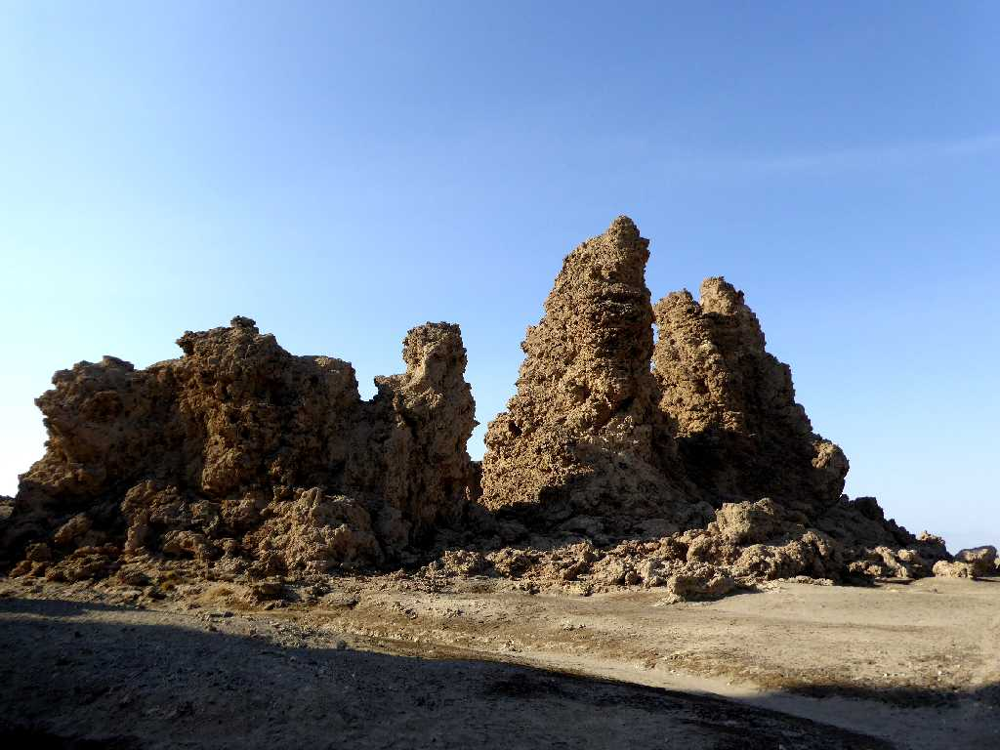
Chimneys Lake Abbe
アベ湖の東側に広がる噴出孔の石灰華の奇岩群で高さ５０ｍにおよぶ巨大なチムニーもある
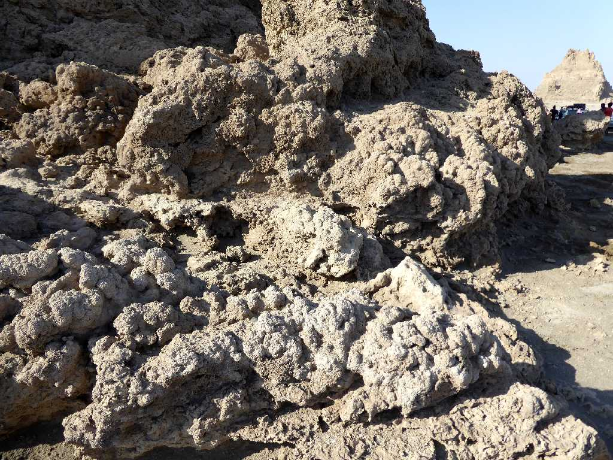
Rock Chimneys Lake Abbe
チムニーは湖底の噴出孔に出来る原始地球の生物マグマバクテリアに覆われた煙突状の石柱で海溝の深海でしか観られないチムニーを地上で観ることが出来る
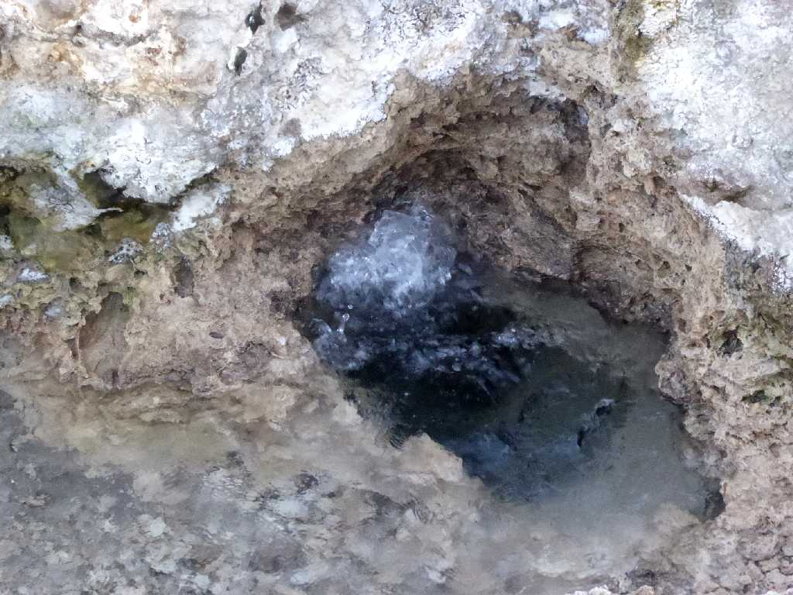
Exhaust Nozzle Lake Abbe
今も噴出孔から吹き出る熱水
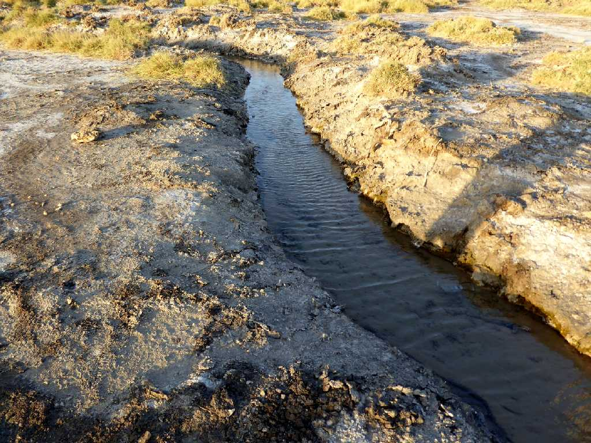
Hot Spring River Lake Abbe
噴出孔からアベ湖に流れ出る熱水の川
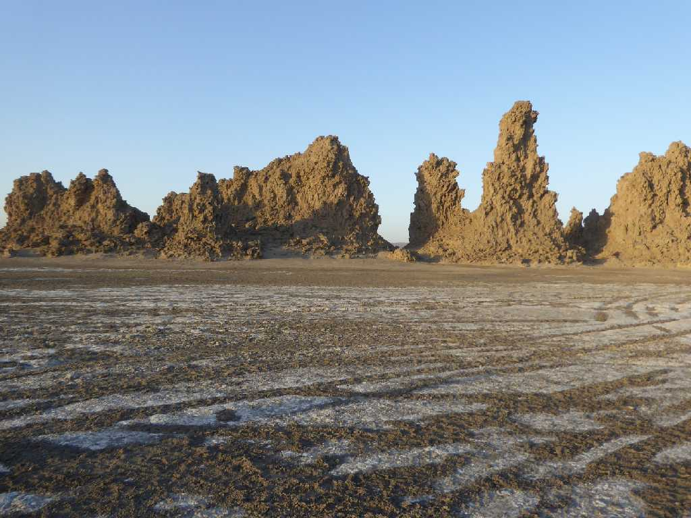
Chimneys Lake Abbe
アベ湖への流入水がエチオピアの水力発電に利用されるようになり湖底で形成されたチムニーが湖面の低下により地上に現れた
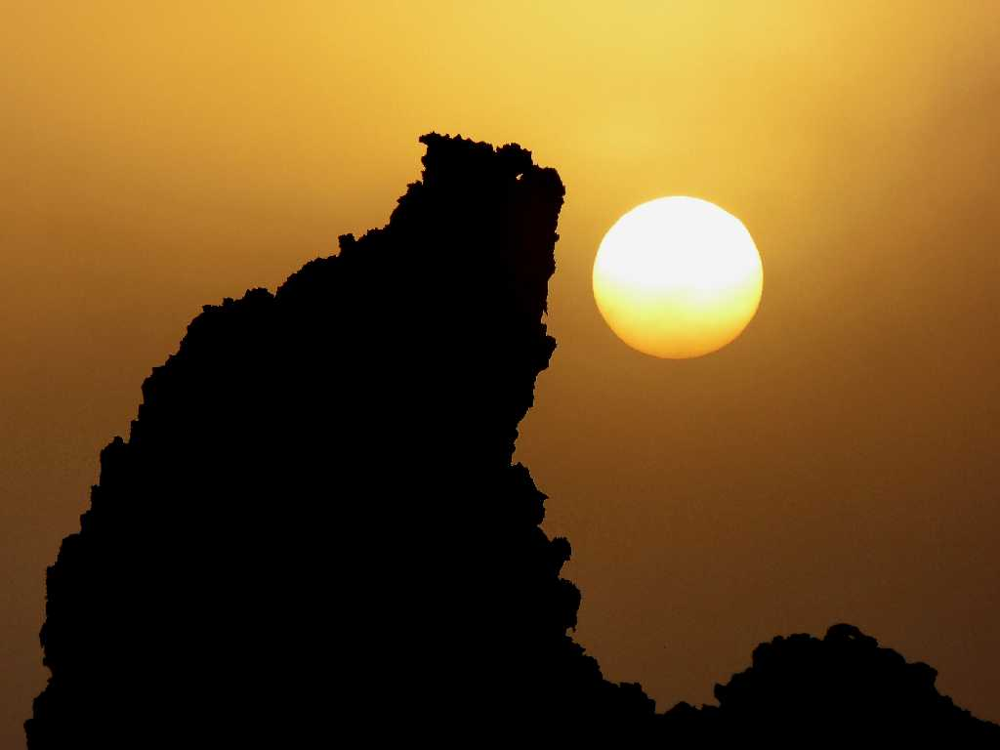
January 18 2017 17:57 Sunset Chimneys Lake Abbe
チムニーのシルエットが夕日に映える
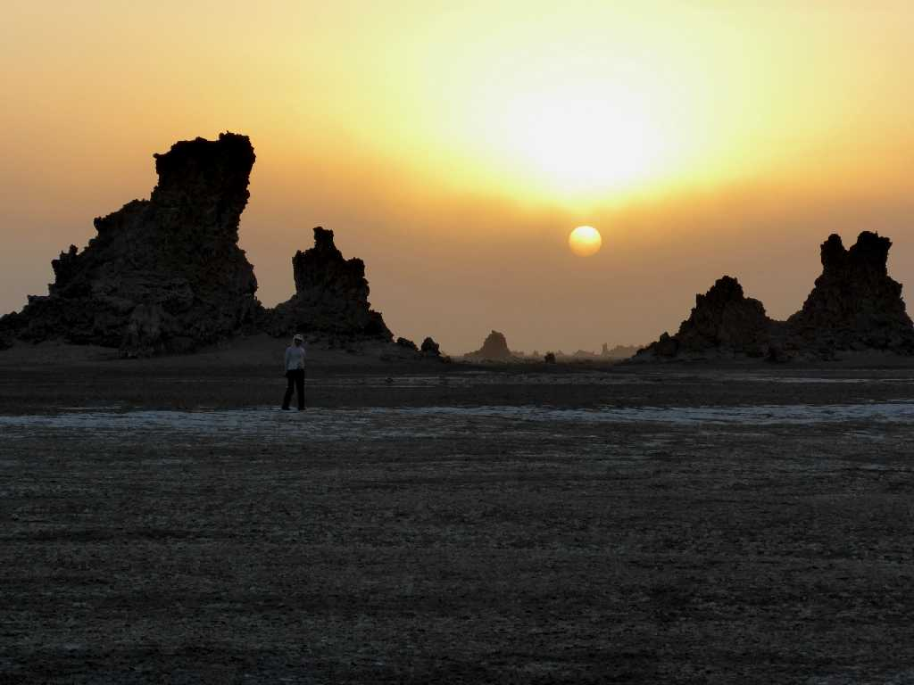
January 18 2017 17:59 Sunset Chimneys Lake Abbe
チムニーの奇岩群の中に沈みゆく夕日
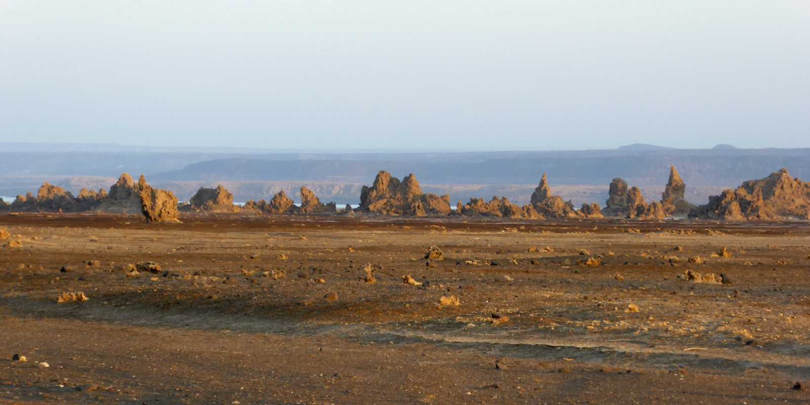
Chimneys Lake Abbe
アベ湖の湖岸に広がる噴出孔の石灰華でこの地はアナザーアースと呼ばれ映画猿の惑星のロケ地として有名
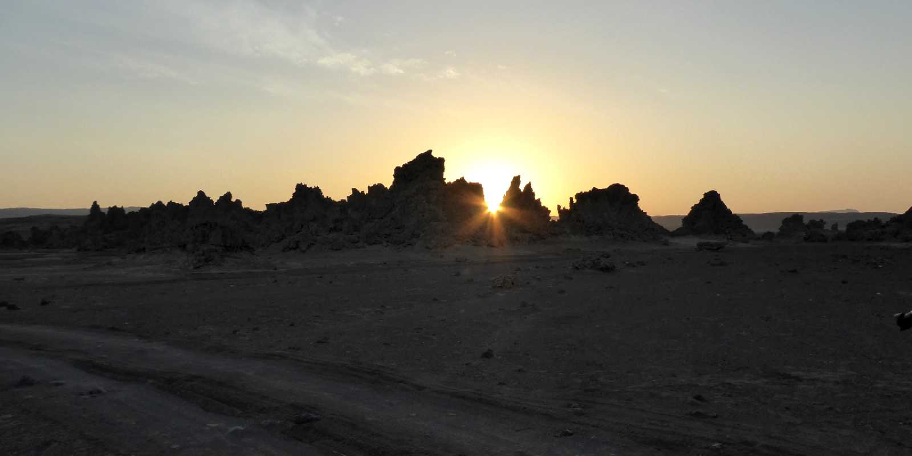
January 19 2017 6:51 Sunrise Chimneys Lake Abbe
美しい石灰華の奇岩群から昇る朝日
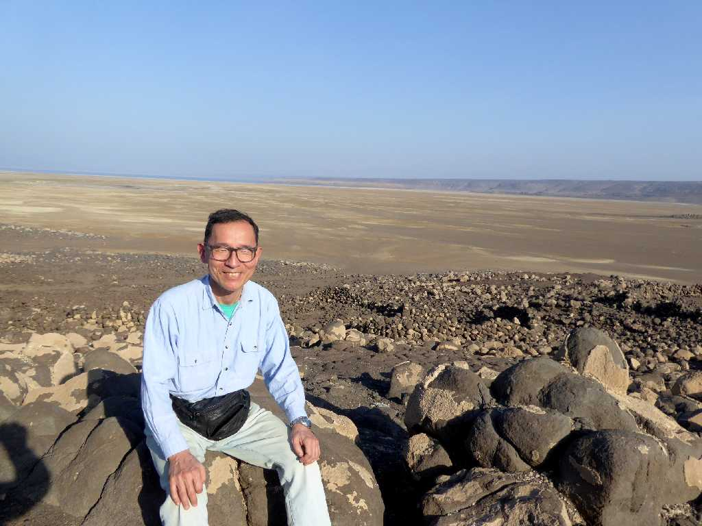
January 19 2017 Lake Abbe
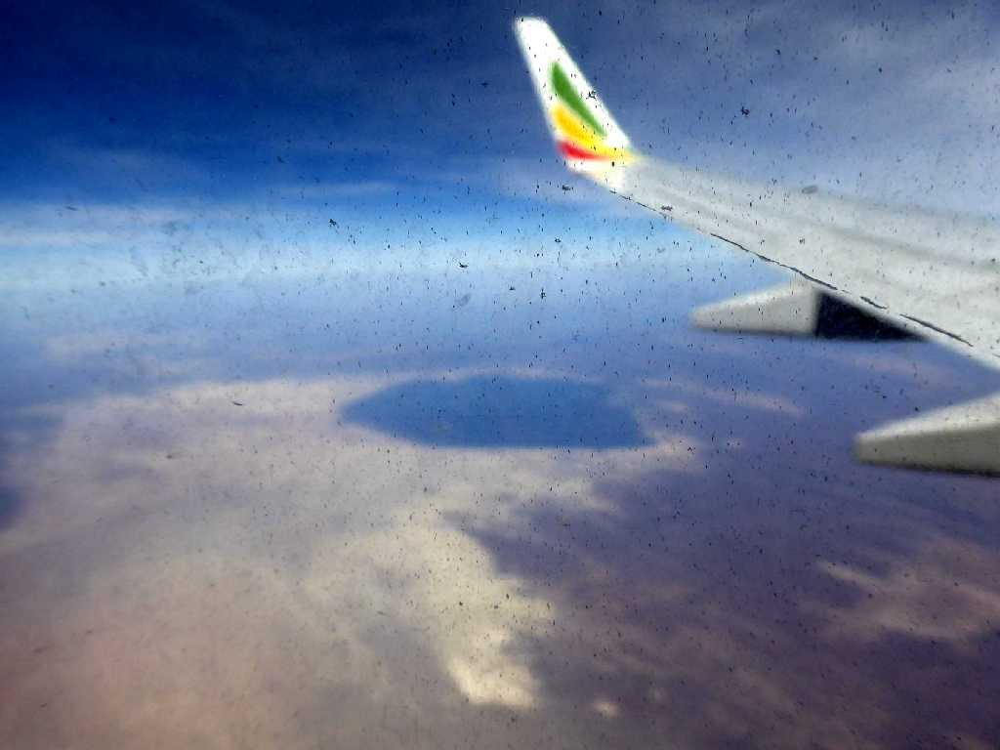
On airplane from Addis Ababa to Djibouti Lake Abbe
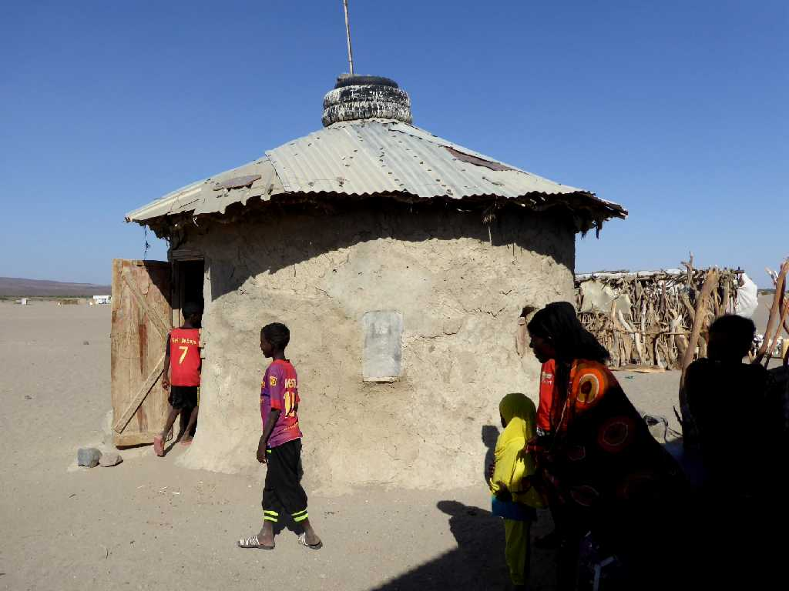
Head house Village near Lake Abbe
アファール族の村に立ち寄る
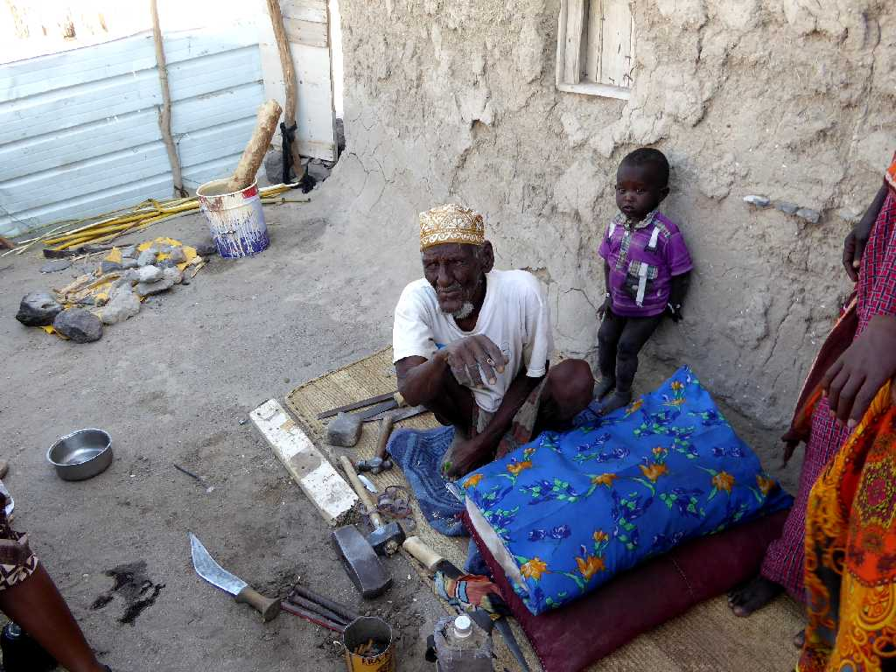
Village head Village near Lake Abbe
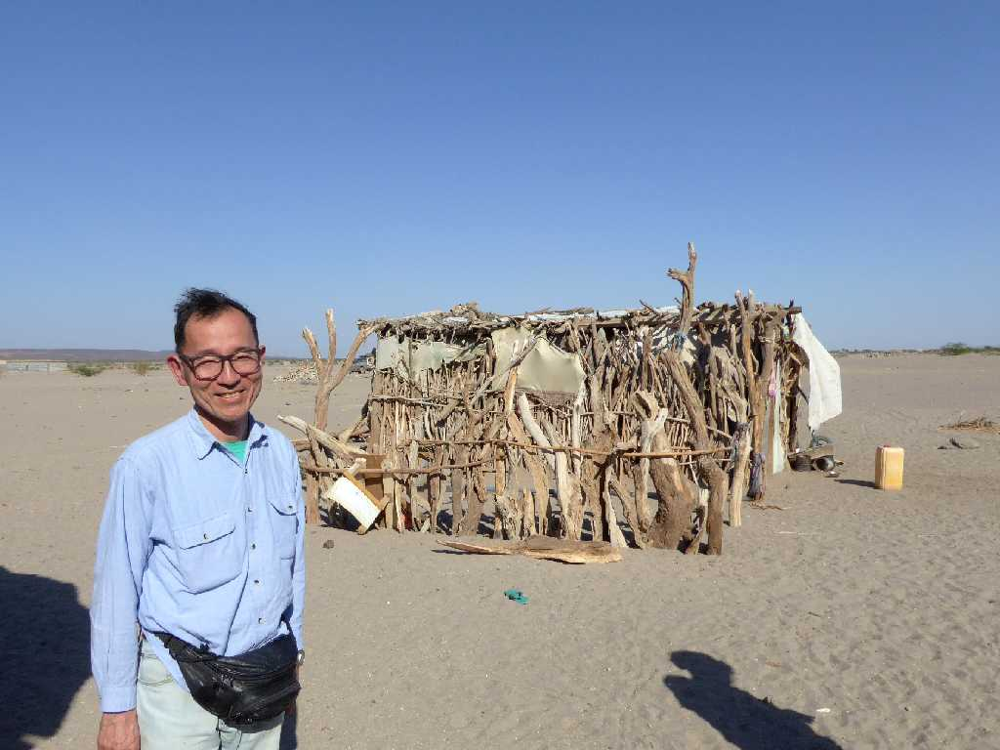
January 18 2017 Village near Lake Abbe